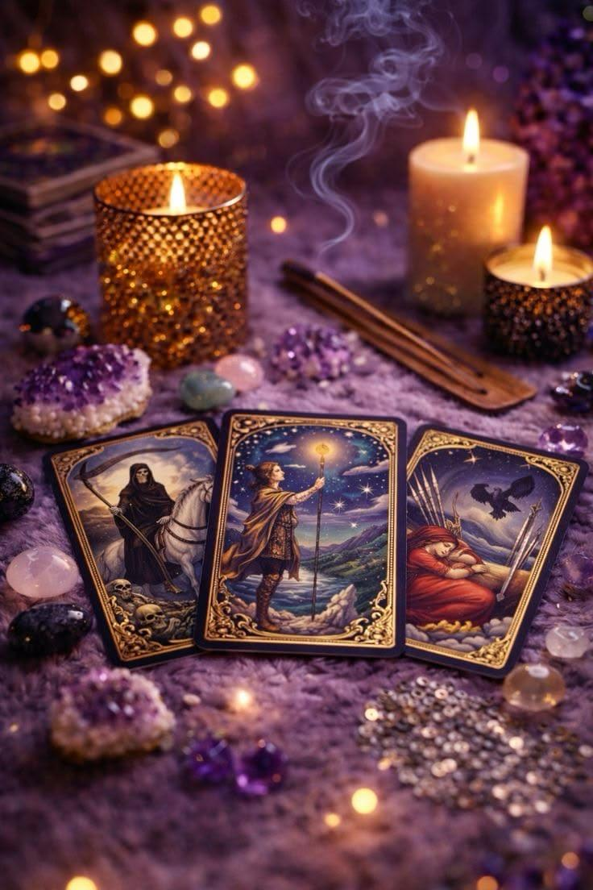
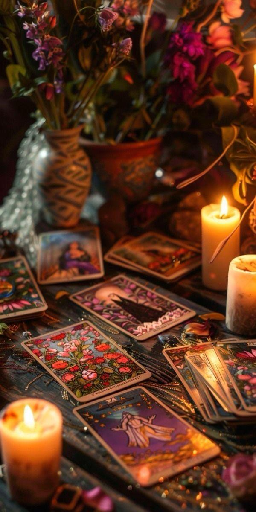
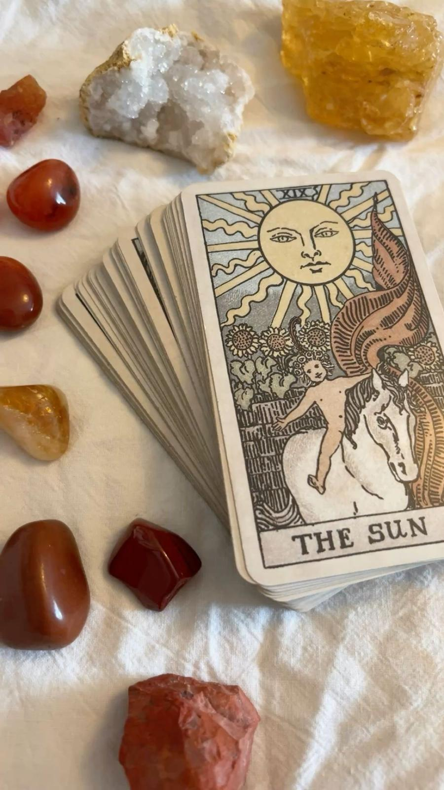
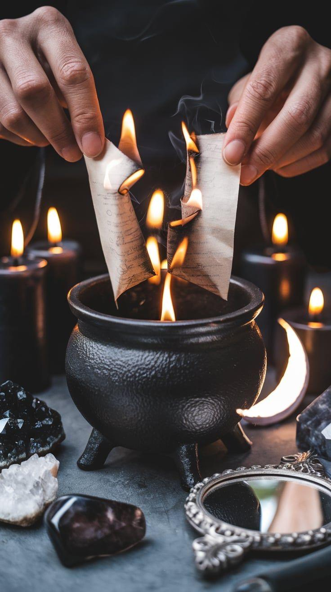
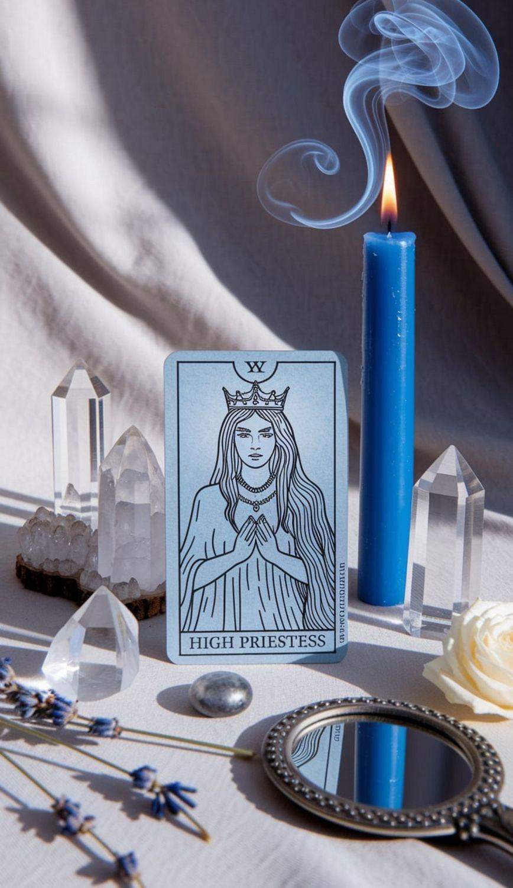

El Tarot no adivina tu futuro, te ayuda a crearlo. Conecta con la energía de tu alma y encuentra la claridad que ya reside en ti.

Vivimos rodeados de ruido. Las expectativas, los miedos y el día a día a veces nos desconectan de nuestra brújula interna. Magia Sin Filtros nace como un espacio seguro para escuchar lo que tu alma ya sabe, pero tu mente no te deja oír.
Mi enfoque con el Tarot es terapéutico y evolutivo. No busco decirte lo que quieres escuchar, sino lo que necesitas saber para desbloquear tu energía y tomar las riendas de tu vida.
"Eres el creador de tu propia magia."
Elige la sesión que resuene con tu energía actual
30 Minutos
Ideal para resolver dudas concretas o tomar una decisión importante. Una mirada directa y sin filtros a tu situación actual. 20€
60 Minutos
Una sesión profunda. Analizamos bloqueos energéticos, patrones que se repiten y el camino que tu alma te pide seguir.
45 Minutos
Enfocada en entender la energía entre tú y otra persona (pareja, familia, amistades). Qué vienes a aprender de esa conexión.
Magia y energía para transformar tu realidad y tu entorno
Está diseñado para eliminar bloqueos energéticos y obstáculos que impiden el avance personal. Su objetivo es atraer nuevas oportunidades y prosperidad en áreas como el trabajo, el amor o la salud.
Es una práctica de reconexión interna enfocada en nutrir la mente, el cuerpo y el espíritu. Busca fortalecer la autoaceptación, la confianza y el cuidado personal mediante la gratitud y la atención plena.
Se utiliza para liberar personas o espacios de vibraciones negativas y cargas emocionales acumuladas. Ayuda a restaurar el equilibrio, la armonía y la paz mental en el entorno cotidiano.
Se centra en suavizar las emociones y potenciar los sentimientos positivos dentro de una relación ya existente. A diferencia de otros amarres, busca mejorar la armonía, la dulzura y la comunicación sin forzar la voluntad ajena.
Un vistazo a mi mundo y mi energía



